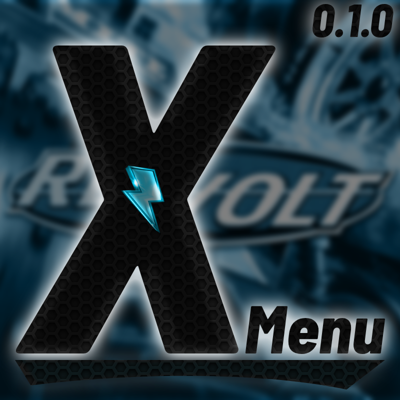

Trainer menu and Chaos Mod for RVGL 23.1030a1 (64-bit).
Download XMenu 0.1.0 (win64, 1.6 MB)
RVGL Launcher: close RVGL, then copy the rvgl_win64 and rvgl_assets folders from the zip into %LOCALAPPDATA%\rvmm\packs (merge and replace).
Standalone: copy the contents of rvgl_win64 and rvgl_assets next to rvgl.exe.
To remove it, delete version.dll and XMenu.dll.
F7 - open/close menu
Numpad 8/2 - up/down
Numpad 4/6 - change value
Numpad 5 - select
Numpad 0 - back
F6 - airbreak (W/S up/down, Numpad 8/2/4/6 move)
Hold middle mouse - fly where you look (if turned on)
; - unlimited ammo
= - no car collision
- - reset car
] (hold) - speed boost
Controller: RB + D-Pad Right opens the menu, A select, B back
Keys are for a US keyboard and can be changed in ZMenuRVGL.ini.
Only RVGL 23.1030a1 is supported. XMenu turns itself off in online lobbies.
ZMenuRVGL.ini and the ZMenu folder. Old ZMenu settings still work.XMenuAssets/CustomEffectSounds/<id>.mp3)ZMenu_Chaos.ini, log in ZChaosEffectLog.logWeapons and pickups: Give Shockwave, Give Firework, Give 3 Fireworks, Give Bomb, Give 3 Water Bombs, Give Electro Pulse, Give Oil Slick, Give Chrome Ball, Give Turbo, Give Fake Pickup, Give Star, the same 11 for all opponents, Remove Current Powerup, Unlimited Ammo
Explosions and launches: Explode Car, Explode All Opponents, Launch Player, Launch All Cars, Launch into Narnia, Massdriver, Goodbye, Lift Me Up, Invert Current Velocity, Wrong Way
Teleports: Teleport All Vehicles to You, Teleport All Vehicles in Front of You, Teleport to Random Vehicle, Teleport to Heaven, Teleport to Race Start, Teleport to Current Location, Attach to Nearest Car, Reset, Packet Loss
Spawns and cars: Spawn Helicopter, Spawn 1000 Beach Balls, TROLLEYED, My sprinkler goes like thisstststststst, Teleport All Objects to You, Oil Leak, Probe UFO, We Come in Peace, Trolley, Go Shopping, Clockwork, Like Clockwork, 30 Opponents, Switch to Random Vehicle, Jump to Frontend :tf: (key only)
Laps: Add 5 Laps, Add 10 Laps, Remove 1 Lap
Car shapes: Big Cars, Tiny Cars, Wide Cars, Very Wide Cars, Tall Cars, Long Cars, Flat Cars, Paper Cars, C H O N K Y Cars, Reverse Cars, Tall Bois, Paper Dario, Nightmare Cars
Object shapes: Big Objects, Tiny Objects, Paper Objects, Wide Objects, Very Wide Objects, Tall Objects, Long Objects, Reverse Objects, Flipped Objects, Flat Objects, Oh god what have you done
Physics: No Car to Car Collision, Airbreak, Bouncy Cars, Slightly Bouncy Cars, Very Bouncy Cars, Pinball, No Car Gravity, No Mass?, X10 Gravity, Physics have left the chat, GRUG SMASH, LET IT RIP, RIP HARDER, Beyblades, Spinning Traffic, Car Speedup, Need for Speed, Cruise Control, Gravity Field, Hyper Gravity Field, Forcefield, Earthquake, Earthquake while someone's playing dubstep
Controls: No Steering, Half Steering, Crazy Steering, Steer Bias (Left), Steer Bias (Right), Pedal to the Metal, Disable Brakes, Half Brakes, Reverse Gear, Faulty Gas Pedal, No Control, Tesla Mode
Time: Slow-mo, Game Speedup, Random Game Speed, Standstill, SUPERHOT
Camera: GTA 2, GTA -2, Free Camera, Rotatable Camera, San Andreas Camera, Australia Mode, Look Behind, "It's easier to aim", they said, Is it easier to aim yet?, Low FOV, Quake Pro
World textures: Pepega World, It's Cat Time, Forgot to install CS:S, Unaware
Text: UwUify, Pepega Text, Kitty Text, Neko Text, Buttsbot
Screen: Flip Screen, Portrait Mode, Anti-Portrait Mode, DVD Screensaver, Blind, Good luck, Fading Out, Sleepy Mode, Fake Lag, Fake Crash, RainbowPls, Nightmare fuel, 4K RTX Realistic ENB Simulator, QuantV Mode, Crashed! (Canyon Screen Filter), Juiced 2 DS, Jell-o, I need a drink, Thunderstorm, Rainy Weather, Too Much Information, Familiar Chaos UI, Roll Chaos Credits
Meta: 3 Random Effects, Combo Time, OMEGA COMBO TIME, Clear Active Effects, Refill Active Effect Timers, Reset Effect Cycle, Trigger a Disabled Effect, Fake Effect, Nothing, Spawn Air, Delete All Camels
Made by sinaosal. Based on ZMenu RVGL.